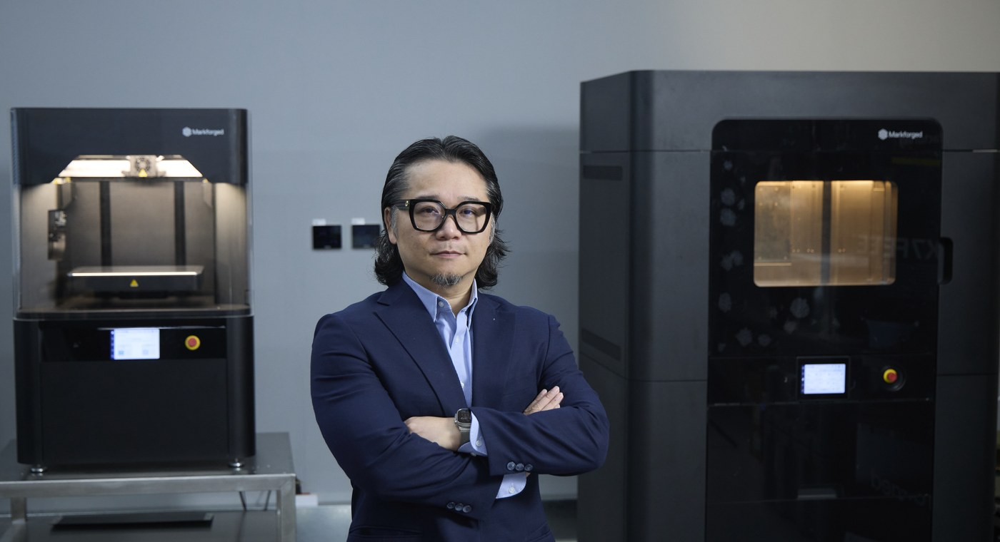
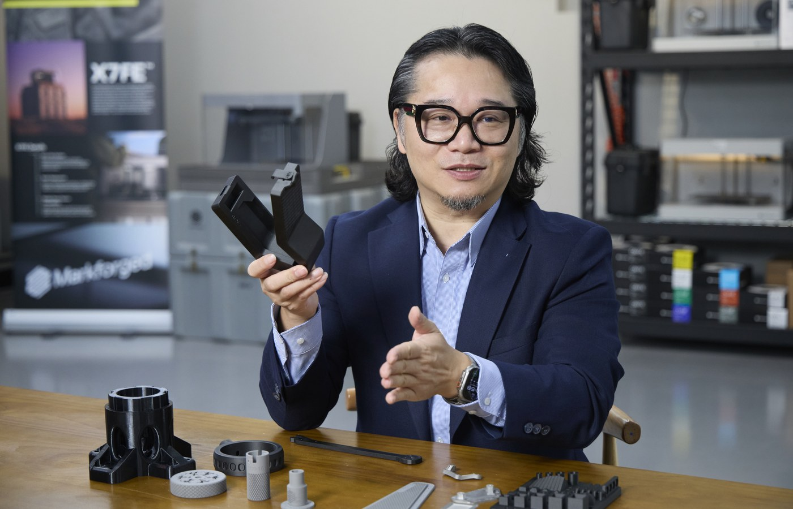

News & Insights

以製造與驗證讓 Physical AI 落地
Physical AI（實體 AI）的核心不在模型堆得多高，而在設計能不能落地、驅動機械運轉。Markforged 大中華區總經理陳中欣認為，積層製造是設計走向量產的橋樑，關鍵在於輸出的幾何與迭代的節奏能不能對上：製程不受刀具與模具限制，又具備結構強度，跟得上軟體的迭代速度。
積層製造是設計走向量產的橋樑，關鍵在於輸出的幾何與迭代的節奏能不能對上。
文中陳中欣的觀點 · Markforged 大中華區總經理
材料與驗證
以連續纖維建立強度，以工程驗證建立信任
「積層製造只能做原型」，是 2015 年材料受限時留下的舊標籤。陳中欣說，Markforged 以連續纖維強化（Continuous Fiber Reinforcement, CFR）技術突破此限制：列印時將連續碳纖維、Kevlar 或玻璃纖維鋪設在 Onyx（碳纖維微粒強化的尼龍基材）之中，由纖維承擔載荷，兼具輕量與高剛性，在纖維鋪層方向上，部分結構件的比強度（Specific Strength）可超越鋁合金。旗艦機種 FX10 加裝 Metal Kit 後，同一台設備即可在複合材料與金屬之間切換，金屬模式支援 17-4 PH、316L 與 H13 工具鋼。
真正的導入門檻不在塑膠強度，而在誰為零件的表現背書。解法是把信任轉為可驗證的規格：材料數據、製程參數與檢測報告隨件留存，讓設計、製程與品保用同一套數據判斷零件能不能上線；需要極嚴配合公差、或已攤提完開模成本的大量標準件，仍舊交給既有製程，其餘應用都以可追溯的數據決定。半導體、食品與航太等高規範場域，另有抗靜電、食品接觸級與阻燃材料，備件可直接裝上產線，不必停留在原型階段。
Canon 在半導體曝光機上以列印治具取代金屬件，降低刮傷晶圓的風險——這是半導體設備 OEM 少數對外公開的導入案例。Haddington Dynamics 的七軸機械臂 Dexter，零件數由 800 件降至 70 件以下，機械臂可在一天內完成組裝，速度提升 70%、成本降低 58%。導入面，Markforged 建立材料認證與教育訓練機制，讓設計、製程與品保共用同一套語言，把個人經驗轉為組織能力。
產能配置
分流治具與工件精度，四階段釋放 CNC 產能
隨需製造對加工廠的價值，不在取代 CNC，而在把不需要精密配合的軟爪與防呆板移出排程，讓 CNC 工時回到高價值訂單。關鍵是分清工件與治具的精度需求：以 ±0.02 mm（20 µm）為例，那是工件加工面的要求，治具本體不需要同等精度；襯套與嵌件的作用在於耐磨與鎖固，而不是彌補公差。
四階段藍圖：第一個月挑 3 至 5 件不需精密配合的應用做驗證；第 2 至 3 個月導入嵌件工法；第 4 至 6 個月走向近淨成形，大型異形件先列印再精修；接著把重複性高的治具建成數位庫存。陳中欣指出，這條路徑約半年走完一輪，機台產能可以實質釋放出來。
Hugard Inc. 的車床接料夾爪，製作時間由 CNC 加工的 144 小時縮短為列印 6 小時，成本從 400 美元降到 25.06 美元，每日接料 3,000 件、24 小時不間斷運轉——這類零件幾何複雜又長期接觸切削液，CNC 銑削與一般 ABS 列印都做不出來，積層製造補上的正是既有製程做不到的那一段。Farason Corporation 的末端快換安裝板，成本僅為 CNC 銑削的 25%，可支援每分鐘 80 件、行程逾 26 英寸（約 660 公釐）的應用。Roman Design Solutions 以 5 台 X7 列印 Onyx 治具，單批 30–60 件。美國密西根州的 Project DIAMOnD 則以數百台設備組成全美最大的分散式列印網路，急件可在網路內調度產能。
流程與庫存
從邊印邊檢走向全檢，數位庫存降低停機風險
Physical AI 的工具要能落地，必須滿足四項條件：可重複、製程紀錄可追溯、不必為它新增專家、應用範圍界定清楚。這四項正是 Digital Forge 的設計前提；導入之後，差別不在設備本身，而在能不能嵌進日常流程。
把試錯週期從兩週壓縮到隔夜，工程師就能從一次只做一版，變成一次測試三版，一年累積下來可以探索的方向遠多於過去，這正是製造業進入迭代時代的優勢。Markforged 以 Eiger 作為 Digital Forge 的引擎並持續更新，整合 Simulation、Inspection 與 Management and Integration 三個模組。Digital Forge Complete Advanced Plan 包含 Simulation 與 Inspection，適用機型擴及 Industrial 系列（臺灣現售機種為 X7、X7 Field Edition、FX10、FX20）。雲端運算降低本地端的運算負擔，離線部署則可滿足國防等高資安場域的要求；Markforged 亦已取得 ISO/IEC 27001:2022 資訊安全管理系統認證。
品質驗證走的是閉環流程：列印過程中以雷射掃描量測，完成後立即比對、判定並產出報告，記錄操作者、時間與版本。一旦偵測到異常，設備會自動暫停並留下紀錄，由人員判讀後決定續印或終止，責任與軌跡都留在流程裡。Hangar One Avionics 導入後，每件約省下 30 分鐘檢測時間，不增加工時就能做到全檢。
根據全國工業總會（工總）白皮書調查，在 161 個公會中，缺工 76.6%、產業轉型 75.7%，分列前兩位。對應到製造現場，Eiger 內建的 AI 輔助功能可檢索原廠技術文件，依使用者的問題直接回答，現場不必等專家到場。陳中欣強調：「我們不是只有賣設備，是整個解決方案。最重要是軟體。」
數位庫存瞄準的是品項多、單項用量少、停機成本高的零件。Markforged 以 Digital Source 實現：OEM 上傳設計並鎖定製程後，授權端只能依規範列印，無法下載設計檔或進行逆向工程。要把工廠能力納入管理流程，需要管好三類資料：設計上雲端並具版本權限、製程參數鎖定、驗證報告隨件保存。Vestas 已將逾 2,000 個零件納入雲端數位庫存，並推廣到 23 個據點；BMF GmbH 則以 Digital Source 讓客戶自行列印備件，把停機從平均 14 天壓縮到 1 天。
在地落點
中臺灣製造聚落：把交期壓縮到以天為單位
2025 年 12 月 Markforged 與彰化市簽署 MOU，定位「無人載具＋數位鍛造示範城市」，由臺灣授權夥伴達運光電、實威國際與馬路科技提供設備導入、CAD 整合及逆向工程支援，協助臺中與彰化業者把交期壓縮到以天為單位。陳中欣強調，臺灣本來就有精密機械與資通訊聚落的底子，若能把設計、製造與檢測資料整合起來，供應鏈韌性與競爭力都會跟著提升。
Physical AI 能不能落地，關鍵在於誰能把試產與驗證週期壓縮到以天計算，並把設計定義、製程參數與品質稽核資料，轉化為跨廠可複製的製造網路。若臺灣能減少外包排隊與備料積壓，以隨需製造與關燈工廠實現自主生產，就有機會在全球智慧製造重構中，從代工聚落轉型為具自主製造能力的高附加價值環節。
Physical AI 聽起來很遠，但對臺灣的工廠而言，起點不必是整廠數位化。陳中欣的建議只有一句：挑一件現在最占交期的治具，先印一次、量一次、上機試一次。當試錯週期從兩週壓到隔夜，你會很快看清楚，真正卡住產能的到底是設備、是排程，還是那張還沒被數位化的圖。這一波製造業的重構，不會等誰準備好——它從你手上那一件零件開始。

想親手摸到這些零件？
從 3 至 5 件不需精密配合的治具開始驗證，是多數工廠風險最低的起點。Markforged 大中華區 VIP 體驗日開放現場實機操作與樣件上手，歡迎帶著你手上最占用交期的那一件來，我們當場一起看。
報名 VIP 體驗日 · 現場實機來源與說明
- 本文由 iThome 採訪撰稿，Markforged 大中華區提供受訪內容與案例資料（閱讀 iThome 原文）。
- 文中案例與數據均取自 Markforged 官方公開案例，可於 markforged.com 查證。
- 專訪拍攝：2026 年 9 月 8 日。